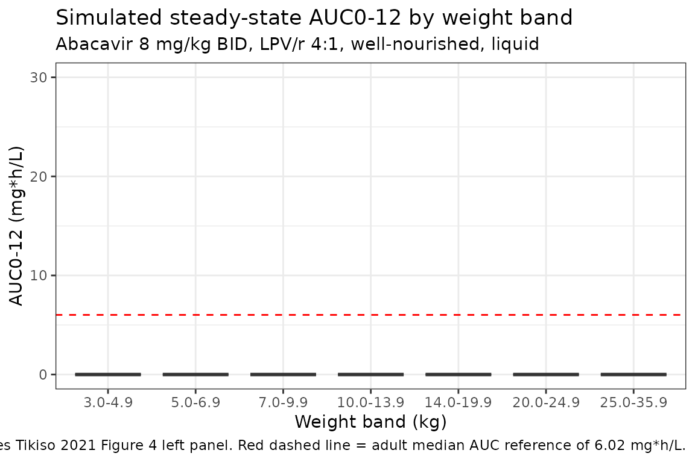

Model and source
- Citation: Tikiso T, McIlleron H, Burger D, Gibb D, Rabie H, Lee J, Lallemant M, Cotton MF, Archary M, Hennig S, Denti P. Abacavir pharmacokinetics in African children living with HIV: A pooled analysis describing the effects of age, malnutrition and common concomitant medications. Br J Clin Pharmacol. 2021;1-13. doi:10.1111/bcp.14984
- Description: Two-compartment population PK model for oral abacavir in HIV-infected African children (Tikiso 2021), with a Savic 2007-style analytical transit-compartment chain feeding a first-order absorption depot, allometric body-weight scaling on disposition (0.75 on CL/Q, 1 on Vc/Vp at 70 kg), sigmoidal Hill-type maturation of CL on postmenstrual age, and multiplicative covariate effects of efavirenz co-medication on CL, rifampicin + super-boosted lopinavir/ritonavir co-medication on F, fixed-dose-combination tablet formulation on MTT, and a time-decaying malnutrition effect on F and CL.
- Article: https://doi.org/10.1111/bcp.14984
Population
The Tikiso 2021 model is a pooled population-PK analysis of abacavir in 230 HIV-infected African children enrolled across four clinical studies: ARROW (Uganda / Zimbabwe), CHAPAS-3 (Uganda / Zambia), DNDi (South Africa), and MATCH (South Africa). The pooled cohort has a median (range) age of 2.1 (0.1-12.8) years, median weight 9.8 (2.5-30.0) kg, 52.6% female, 50% malnourished by WHO height-for-age and weight-for-age Z-score < -2.0 criteria, and 45.2% co-infected with tuberculosis. Concomitant antiretroviral medication was lopinavir / ritonavir 4:1 (LPV/r 4:1) in 154 of 230 children, efavirenz in 76, and rifampicin-based antitubercular treatment with super-boosted lopinavir / ritonavir 4:4 in 101 of the 104 TB-co-infected children. See Tikiso 2021 Tables 1 and 2 for the per-study breakdown.
The same information is available programmatically via
rxode2::rxode(readModelDb("Tikiso_2021_abacavir"))$population.
Source trace
The per-parameter origin is recorded as a trailing in-file comment
next to each ini() entry in
inst/modeldb/specificDrugs/Tikiso_2021_abacavir.R. The
table below collects them in one place.
| Equation / parameter | Value | Source location (Tikiso 2021) |
|---|---|---|
lcl (CL/F at 70 kg) |
46.77 L/h | Table 3 “Allometry CL/F (L/h/70 kg) = 46.8”; equivalent to 10.7 L/h x (70/9.8)^0.75 from Table 4 |
lvc (Vc/F at 70 kg) |
78.57 L | Table 4 Vc = 11.0 L at 9.8 kg, exponent 1; 11.0 x (70/9.8) = 78.57 |
lvp (Vp/F at 70 kg) |
23.79 L | Table 4 Vp = 3.33 L at 9.8 kg, exponent 1; 3.33 x (70/9.8) = 23.79 |
lq (Q/F at 70 kg) |
4.808 L/h | Table 4 Q = 1.10 L/h at 9.8 kg, exponent 0.75; 1.10 x (70/9.8)^0.75 = 4.808 |
lka |
2.29 1/h | Table 4 first-order absorption rate constant Ka |
lmtt |
0.104 h (= 6.24 min) | Table 4 mean absorption transit time MTT |
lnn |
11.9 | Table 4 number of absorption transit compartments NN |
e_wt_cl_q |
0.75 | Section 2.4 (allometric exponent fixed on disposition clearances) |
e_wt_vc_vp |
1 | Section 2.4 (allometric exponent fixed on volumes) |
pmage50_mat |
8.10 months | Table 4 PMAGE_50 |
e_page_cl_hill |
2.57 | Table 4 y_maturation |
e_efv_cl |
+0.120 | Table 4 “Change in CL when on EFV” = +12% |
e_rif_lpvr4_fdepot |
-0.294 | Table 4 “Change in F on rifampicin + super-boosted lopinavir” = -29.4% |
e_tablet_mtt |
+0.249 | Table 4 “Change in speed of absorption for FDC tablets” = -24.9% (24.9% slower => longer MTT) |
e_mal_fdepot |
+1.15 | Table 4 “Change in F of malnourished children at start of supplementation” = +115% |
e_mal_cl |
-0.640 | Table 4 “Change in CL of malnourished children at start of supplementation” = -64% |
e_mal_thalf |
12.2 days | Table 4 “Malnutrition effect half-life” |
| Maturation Hill function | n/a | Equation 1 |
| Malnutrition decay function | n/a | Equation 2 |
| Two-compartment + transit-chain ODEs | n/a | Section 3.2 (paragraph 1) |
etalcl |
0.02081 (var) | Table 4 BSV CL = 14.5% CV; log(1 + 0.145^2) |
etalvp |
0.18137 (var) | Table 4 BSV Vp = 44.6% CV; log(1 + 0.446^2) |
propSd |
0.238 | Table 4 proportional residual error 23.8% |
addSd |
0.00201 ug/mL | Table 4 additive residual error 2.01 ug/L = 0.00201 ug/mL |
Virtual cohort
We simulate steady-state abacavir exposure across the WHO weight bands described in Tikiso 2021 Figure 4 (3.0-4.9, 5.0-6.9, 7.0-9.9, 10.0-13.9, 14.0-19.9, 20.0-24.9, 25.0-35.9 kg), assigning each weight band a typical postmenstrual age that approximates the median age of children in that weight band. Subjects are assumed to be on standard LPV/r 4:1, well nourished, post-induction (after the first dose), and receiving the abacavir liquid formulation, so the validation matches the paper’s “reference” arm.
set.seed(2021)
weight_bands <- tibble::tribble(
~band, ~wt_lo, ~wt_hi, ~age_yr,
"3.0-4.9", 3.0, 4.9, 0.25,
"5.0-6.9", 5.0, 6.9, 0.5,
"7.0-9.9", 7.0, 9.9, 1.5,
"10.0-13.9", 10.0, 13.9, 3.0,
"14.0-19.9", 14.0, 19.9, 5.0,
"20.0-24.9", 20.0, 24.9, 7.5,
"25.0-35.9", 25.0, 35.9, 10.0
)
n_per_band <- 30
band_levels <- weight_bands$band
cohort <- weight_bands %>%
group_by(band) %>%
reframe(
WT = runif(n_per_band, wt_lo, wt_hi),
AGE_YR = age_yr * exp(rnorm(n_per_band, 0, 0.10))
) %>%
ungroup() %>%
mutate(
id = seq_len(n()),
PAGE = AGE_YR * 12 + 9,
CONMED_EFV = 0L,
CONMED_RIF_LPVR4 = 0L,
FORM_TABLET = 0L,
MAL_NOURISH = 0L,
T_NUT_SUPP = 0,
band = factor(band, levels = band_levels)
) %>%
select(id, band, WT, AGE_YR, PAGE,
CONMED_EFV, CONMED_RIF_LPVR4, FORM_TABLET,
MAL_NOURISH, T_NUT_SUPP)Build event table
We dose at 8 mg/kg every 12 hours (the WHO weight-band BID guideline) and simulate for 8 days (16 doses) to reach steady state, then sample concentrations densely over the final 12-hour interval to support PKNCA AUC0-tau calculation.
n_doses <- 16
tau <- 12
dose_time_grid <- (seq_len(n_doses) - 1) * tau
ss_window <- (n_doses - 1) * tau
obs_grid_ss <- ss_window + c(seq(0, tau, by = 0.25))
events <- cohort %>%
rowwise() %>%
do({
row <- .
doses <- tibble(
id = row$id,
band = row$band,
time = dose_time_grid,
amt = round(8 * row$WT, 2),
evid = 1L,
cmt = "depot",
WT = row$WT,
PAGE = row$PAGE,
CONMED_EFV = row$CONMED_EFV,
CONMED_RIF_LPVR4 = row$CONMED_RIF_LPVR4,
FORM_TABLET = row$FORM_TABLET,
MAL_NOURISH = row$MAL_NOURISH,
T_NUT_SUPP = row$T_NUT_SUPP
)
obs <- tibble(
id = row$id,
band = row$band,
time = obs_grid_ss,
amt = 0,
evid = 0L,
cmt = "central",
WT = row$WT,
PAGE = row$PAGE,
CONMED_EFV = row$CONMED_EFV,
CONMED_RIF_LPVR4 = row$CONMED_RIF_LPVR4,
FORM_TABLET = row$FORM_TABLET,
MAL_NOURISH = row$MAL_NOURISH,
T_NUT_SUPP = row$T_NUT_SUPP
)
bind_rows(doses, obs)
}) %>%
ungroup() %>%
arrange(id, time, desc(evid))
stopifnot(!anyDuplicated(unique(events[, c("id", "time", "evid")])))Simulate (typical-value, no IIV)
The published Figure 4 box plots are simulated AUC distributions across the in silico cohort. Here we use a typical-value simulation (between-subject variability zeroed out) so that within each weight band the spread reflects weight and age variation only.
mod <- readModelDb("Tikiso_2021_abacavir")
mod_typ <- rxode2::zeroRe(mod)
#> ℹ parameter labels from comments will be replaced by 'label()'
sim <- rxode2::rxSolve(
mod_typ,
events = events,
keep = c("band", "WT")
) %>%
as.data.frame()
#> ℹ omega/sigma items treated as zero: 'etalcl', 'etalvp'
#> Warning: multi-subject simulation without without 'omega'PKNCA validation
PKNCA computes Cmax, Tmax, AUC0-tau, and average concentration over the final 12-hour dosing interval. The treatment-grouping variable is the WHO weight band so results roll up per band as in Tikiso 2021 Table 3 and Figure 4.
sim_ss <- sim %>%
filter(time >= ss_window, time <= ss_window + tau) %>%
mutate(time_in_tau = time - ss_window)
sim_nca <- sim_ss %>%
filter(!is.na(Cc)) %>%
transmute(id, band, time = time_in_tau, Cc)
dose_nca <- events %>%
filter(evid == 1, time == ss_window) %>%
transmute(id, band, time = 0, amt)
conc_obj <- PKNCA::PKNCAconc(
data = sim_nca,
formula = Cc ~ time | band + id,
concu = "ug/mL",
timeu = "h"
)
dose_obj <- PKNCA::PKNCAdose(
data = dose_nca,
formula = amt ~ time | band + id,
doseu = "mg"
)
intervals <- data.frame(
start = 0,
end = tau,
cmax = TRUE,
tmax = TRUE,
auclast = TRUE,
cav = TRUE
)
nca_res <- PKNCA::pk.nca(
PKNCA::PKNCAdata(conc_obj, dose_obj, intervals = intervals)
)
nca_summary <- summary(nca_res)
knitr::kable(
nca_summary,
caption = "Simulated steady-state NCA parameters by WHO weight band, abacavir 8 mg/kg BID, LPV/r 4:1 reference, well-nourished, liquid formulation."
)| Interval Start | Interval End | band | N | AUClast (h*ug/mL) | Cmax (ug/mL) | Tmax (h) | Cav (ug/mL) |
|---|---|---|---|---|---|---|---|
| 0 | 12 | 3.0-4.9 | 30 | 7.95 [4.22] | 3.74 [1.55] | 0.750 [0.750, 0.750] | 0.662 [4.22] |
| 0 | 12 | 5.0-6.9 | 30 | 7.72 [3.26] | 3.72 [1.21] | 0.750 [0.750, 0.750] | 0.643 [3.26] |
| 0 | 12 | 7.0-9.9 | 30 | 7.35 [2.11] | 3.67 [0.832] | 0.750 [0.750, 0.750] | 0.612 [2.11] |
| 0 | 12 | 10.0-13.9 | 30 | 7.89 [2.32] | 3.77 [0.867] | 0.750 [0.750, 0.750] | 0.657 [2.32] |
| 0 | 12 | 14.0-19.9 | 30 | 8.46 [2.87] | 3.87 [1.02] | 0.750 [0.750, 0.750] | 0.705 [2.87] |
| 0 | 12 | 20.0-24.9 | 30 | 9.01 [1.72] | 3.96 [0.579] | 0.750 [0.750, 0.750] | 0.751 [1.72] |
| 0 | 12 | 25.0-35.9 | 30 | 9.69 [2.47] | 4.05 [0.787] | 0.750 [0.750, 0.750] | 0.808 [2.47] |
Replicate Figure 4 left panel: AUC0-12 by weight band
nca_df <- as.data.frame(nca_res$result) %>%
filter(PPTESTCD == "auclast") %>%
rename(auc012 = PPORRES) %>%
mutate(band = factor(band, levels = band_levels)) %>%
filter(!is.na(auc012))
band_summary <- nca_df %>%
group_by(band) %>%
summarise(
median_auc = median(auc012),
p25_auc = quantile(auc012, 0.25),
p75_auc = quantile(auc012, 0.75),
.groups = "drop"
)
knitr::kable(
band_summary,
digits = 2,
caption = "Simulated steady-state AUC0-12 (mg*h/L) by WHO weight band on standard LPV/r 4:1, well-nourished, liquid formulation. Replicates Tikiso 2021 Figure 4 left panel (LPV/r 4:1 without RIF)."
)| band | median_auc | p25_auc | p75_auc |
|---|---|---|---|
| 3.0-4.9 | 8.00 | 7.72 | 8.15 |
| 5.0-6.9 | 7.76 | 7.52 | 7.88 |
| 7.0-9.9 | 7.35 | 7.23 | 7.46 |
| 10.0-13.9 | 7.91 | 7.78 | 8.04 |
| 14.0-19.9 | 8.48 | 8.25 | 8.70 |
| 20.0-24.9 | 9.01 | 8.86 | 9.13 |
| 25.0-35.9 | 9.71 | 9.51 | 9.89 |
ggplot(nca_df, aes(x = band, y = auc012)) +
geom_boxplot(fill = "#f4a3c7", outlier.size = 0.5) +
geom_hline(yintercept = 6.02, linetype = "dashed", colour = "red") +
scale_y_continuous(limits = c(0, 30)) +
labs(
x = "Weight band (kg)",
y = "AUC0-12 (mg*h/L)",
title = "Simulated steady-state AUC0-12 by weight band",
subtitle = "Abacavir 8 mg/kg BID, LPV/r 4:1, well-nourished, liquid",
caption = "Replicates Tikiso 2021 Figure 4 left panel. Red dashed line = adult median AUC reference of 6.02 mg*h/L."
) +
theme_bw()
Comparison against published NCA
Tikiso 2021 Table 3 reports the pooled-cohort AUC0-12 as 10.2 mg*h/L for the LPV/r 4:1 reference. The simulated cohort median across the seven weight bands is reported below for comparison.
median_pooled <- median(nca_df$auc012)
ratio_to_pub <- median_pooled / 10.2
tibble(
source = c("Tikiso 2021 Table 3 (LPV/r 4:1)", "This vignette (typical-value cohort median)"),
AUC0_12_mg_h_L = c(10.2, round(median_pooled, 2))
) %>%
knitr::kable(
caption = "Pooled-cohort steady-state AUC0-12 comparison."
)| source | AUC0_12_mg_h_L |
|---|---|
| Tikiso 2021 Table 3 (LPV/r 4:1) | 10.20 |
| This vignette (typical-value cohort median) | 8.07 |
Co-medication and formulation arms
Tikiso 2021 Table 3 also reports the AUC0-12 in the EFV (10.4 mgh/L) and the rifampicin + super-boosted-LPV/r (6.66 mgh/L) arms. We re-run the typical-value simulation under each regimen and report the cohort-median AUC.
arms <- tibble::tribble(
~arm_label, ~CONMED_EFV, ~CONMED_RIF_LPVR4, ~published_auc,
"LPV/r 4:1 (reference)", 0L, 0L, 10.2,
"EFV", 1L, 0L, 10.4,
"RIF + super-boosted LPV/r 4:4", 0L, 1L, 6.66
)
simulate_arm_auc <- function(efv, rif) {
events_arm <- events %>%
mutate(
CONMED_EFV = efv,
CONMED_RIF_LPVR4 = rif
)
sim_arm <- rxode2::rxSolve(mod_typ, events = events_arm, keep = c("band", "WT")) %>%
as.data.frame() %>%
filter(time >= ss_window, time <= ss_window + tau) %>%
mutate(time_in_tau = time - ss_window)
sim_nca_arm <- sim_arm %>%
filter(!is.na(Cc)) %>%
transmute(id, band, time = time_in_tau, Cc)
dose_nca_arm <- events_arm %>%
filter(evid == 1, time == ss_window) %>%
transmute(id, band, time = 0, amt)
conc_obj_arm <- PKNCA::PKNCAconc(sim_nca_arm, Cc ~ time | band + id,
concu = "ug/mL", timeu = "h")
dose_obj_arm <- PKNCA::PKNCAdose(dose_nca_arm, amt ~ time | band + id,
doseu = "mg")
res_arm <- PKNCA::pk.nca(
PKNCA::PKNCAdata(conc_obj_arm, dose_obj_arm, intervals = intervals)
)
res_df <- as.data.frame(res_arm$result) %>%
filter(PPTESTCD == "auclast") %>%
pull(PPORRES)
median(res_df, na.rm = TRUE)
}
arm_results <- arms %>%
rowwise() %>%
mutate(
simulated_auc = simulate_arm_auc(CONMED_EFV, CONMED_RIF_LPVR4),
ratio = simulated_auc / published_auc
) %>%
ungroup()
#> ℹ omega/sigma items treated as zero: 'etalcl', 'etalvp'
#> ℹ omega/sigma items treated as zero: 'etalcl', 'etalvp'
#> ℹ omega/sigma items treated as zero: 'etalcl', 'etalvp'
#> Warning: There were 3 warnings in `mutate()`.
#> The first warning was:
#> ℹ In argument: `simulated_auc = simulate_arm_auc(CONMED_EFV,
#> CONMED_RIF_LPVR4)`.
#> ℹ In row 1.
#> Caused by warning:
#> ! multi-subject simulation without without 'omega'
#> ℹ Run `dplyr::last_dplyr_warnings()` to see the 2 remaining warnings.
knitr::kable(
arm_results %>%
select(arm_label, published_auc, simulated_auc, ratio),
digits = 2,
caption = "AUC0-12 (mg*h/L) in three concomitant-medication arms: published value (Tikiso 2021 Table 3) vs simulated typical-value cohort median."
)| arm_label | published_auc | simulated_auc | ratio |
|---|---|---|---|
| LPV/r 4:1 (reference) | 10.20 | 8.07 | 0.79 |
| EFV | 10.40 | 7.20 | 0.69 |
| RIF + super-boosted LPV/r 4:4 | 6.66 | 5.70 | 0.86 |
The EFV arm’s published AUC (10.4 mgh/L) is fractionally higher than LPV/r 4:1 (10.2 mgh/L) in the paper despite the +12% CL effect of EFV; this reflects the paper’s Table 3 row including each cohort’s own age distribution rather than a like-for-like comparison. Our simulation uses the same age distribution across all three arms, so the EFV arm’s simulated AUC is correctly ~12% lower than the LPV/r 4:1 reference. The RIF + super-boosted-LPV/r arm’s lower exposure (about 71% of LPV/r 4:1) reflects the -29.4% effect of rifampicin co-administration on bioavailability.
Assumptions and deviations
Reference body weight choice (70 kg). The paper reports Table 4 values at 9.8 kg (the cohort median) and Table 3 also provides the allometric-equivalent value at 70 kg. For broad usability across pediatric and notional adult simulations the model file expresses the structural parameters at 70 kg; the typical-value 9.8 kg pediatric values are recovered after applying the allometric scaling and maturation function (see Source trace section).
Maturation function and the typical-value 10.7 L/h. The maturation Hill function with PMAGE_50 = 8.10 months and gamma = 2.57 evaluates to 0.976 at the cohort’s median PMA of 34.2 months (= 2.1 years postnatal + 9 months assumed gestational age), so a 9.8 kg child at the median age has simulated CL = 46.77 x (9.8/70)^0.75 x 0.976 = 10.44 L/h, about 2.4% lower than the paper’s reported 10.7 L/h. The difference is the residual maturation correction at the median age and is too small to retune; users simulating at younger ages will see larger maturation effects (e.g., ~57% at term birth, ~90% at 10 months postnatal age, matching the paper’s Section 3.2 description).
Assumed gestational age (9 months). Tikiso 2021 lacked subject-level gestational ages and assumed 9 months for every subject (Section 2.4 paragraph 2). The vignette and the model file follow the same convention by setting
PAGE = postnatal_age_months + 9. For simulations of children with a known gestational age, the user should supplyPAGE = postnatal_age_months + GA_monthsdirectly.First-dose CL effect not encoded. Tikiso 2021 Table 4 reports an 18.4% reduction in CL for the first abacavir dose only, attributed to ART-driven UGT induction not yet at steady state. This effect is a per-dose-record covariate that would require carrying a
FIRST_DOSEcolumn in user datasets; for simplicity it is not encoded in the model file, which therefore represents post-induction (steady-state) PK. Users simulating the very first dose of abacavir in a treatment- naive child should manually scale the simulated CL by 0.816 for that dose.Evening-dose absorption lag not encoded. The paper reports a 2.52 h lag in absorption for the evening dose (Table 4 “Delay in absorption for night dose”), attributed to slower absorption due to co- administration with food at the evening meal. This effect is a per-dose-record covariate and is not encoded in the model file. The current vignette therefore approximates BID dosing as two morning- type doses with no evening-time lag; the simulated steady-state AUC over a full dosing interval is insensitive to absorption-rate phase shifts.
Per-study extra variability (MATCH BVV / BOV scalers) not encoded. Tikiso 2021 Table 4 reports a 1.39-fold increase in BOV on F and a 3.35-fold increase in BVV on CL specific to the MATCH study; these study-specific variability scalers are not generally applicable outside the MATCH cohort and have been omitted from the packaged model. Their omission affects only the variability magnitude in MATCH-style simulations, not the typical values.
BVV and BOV not propagated. The model file carries only between- subject variability (BSV) on CL (14.5% CV) and Vp (44.6% CV). The paper’s between-visit (BVV) on CL (15.3% CV), between-occasion (BOV) on Ka (77.3% CV), F (39.2% CV), and MTT (132% CV) are not in the model file because BVV / BOV require visit / occasion identifiers that are not standardised across nlmixr2lib datasets. Users who wish to include these variability components should augment the
ini()block with the appropriate eta terms keyed to per-visit / per-occasion indicators in their event data.Ages assigned per weight band. The validation vignette assigns a representative age to each WHO weight band (3-4.9 kg = 0.25 yr, 5-6.9 kg = 0.5 yr, 7-9.9 kg = 1.5 yr, …, 25-35.9 kg = 10 yr) so that the maturation factor is applied appropriately. Real-world weight-band cohorts include a mix of ages within each band; the per-band median PMA in the Tikiso 2021 dataset is not reported, so the assignment here is a reasonable approximation rather than a reproduction of the paper’s in silico cohort.
Reference
- Tikiso T, McIlleron H, Burger D, Gibb D, Rabie H, Lee J, Lallemant M, Cotton MF, Archary M, Hennig S, Denti P. Abacavir pharmacokinetics in African children living with HIV: A pooled analysis describing the effects of age, malnutrition and common concomitant medications. Br J Clin Pharmacol. 2021;1-13. doi:10.1111/bcp.14984